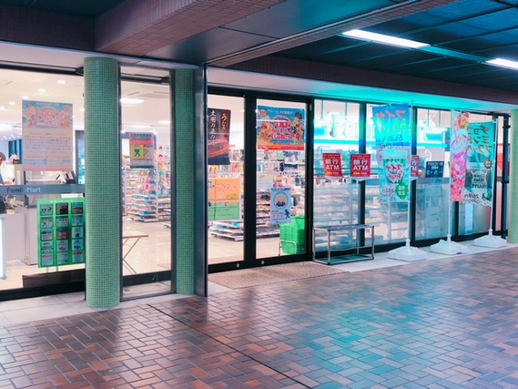

キャンパス紹介
同志社女子大学の門をくぐって少し行ったところの風景です。
綺麗なレンガづくりの建物です！
さらに先に進んで行くと...
こんなに素晴らしい中庭？が広がっています！
すごく見栄えがいいので私は好きです。
ここは通称”２億”と呼ばれているふかふかソファがあるくつろげる場所です。
本当にふかふかなのでお気に入りです！
同志社女子大学の自慢のパイプオルガンがある礼拝堂です。
うるさいなあって思うことの方が多いんですが、
メディテーションアワーの時に聴いたパイプオルガンの音色はいつもと少し違って
穏やかな気持ちになりました。
ここは、上の場所を出ると隣にあるステンドガラスのイエス・キリストです。
シンプルに綺麗で心が浄化されるような気さえ起こりますよね。

これは礼拝堂を出たところにある新島襄の言葉です。
奥が深いですねえ...。
ここは、礼拝堂の前にあるカフェです。
今年できたラーニングコモンズと一緒にできました！
他の食堂とは違って映えるものがたくさんあります！

みんな大好きファミリーマートです！
スパイシーチキンが大好きでいつも食べてしまいます泣
またまたみんな大好き生協です！
毎日届く生協弁当はみんなで取り合いです笑
女の戦いですね。
ここは、私の密かなお気に入りです！
掘りごたつ風になっていて、横で寝転べるんですよ！
家みたいにくつろげます！
最後にここは私の行きつけのパンやさんです！
ラーニングコモンズの中に入ってすぐのところにあるんですけど
全部100円で超お得！！！！
しかも、美味しいからついつい買いすぎちゃいます泣
すごく簡単になってしまったんですけどこれでキャンパス写真集を終わらせていただきます。
BACK
写真は全て私が撮影しました。
花のイラスト：http://irasutohosi.seesaa.net/article/412948581.html